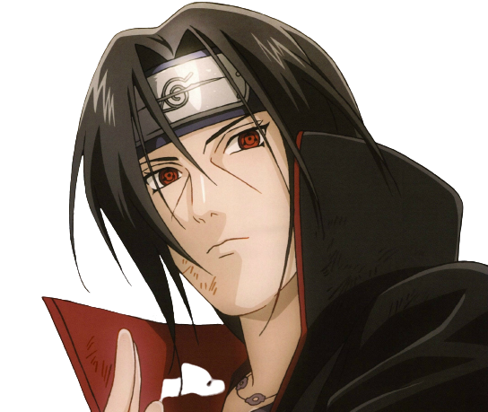

“Those who forgive themselves, and are able to accept their true nature…THEY ARE THE STRONG ONES.”
- Itachi Uchiha
- Itachi was the first child born to Mikoto and Fugaku Uchiha.At age 5, after becoming a big brother to Sasuke.
- From a young age, Itachi was calm and insightful, showing noticeable maturity for his age and knowledge on how to deal with every situation. For all his accomplishments, talent, and fame, Itachi was a rather humble man. Never arrogant about his own abilities nor underestimating others, most things he said would be unbiased and accurate
- Despite the traumas he endured from killing his own family, Itachi did not blame those among Konoha's leadership who gave him the mission; though he did not trust Danzō on a personal level, he knew Danzō only had the village's best interests at heart. But Itachi – partly out of the necessity of his assignment to join Akatsuki – was greatly changed after the massacre, rarely if ever showing emotion. He became more prone to displays of force and permitted certain violent habits of his partner, Kisame, under the pretence that it furthered Akatsuki's goals.
- Konoha's peace and protection was always forefront in Itachi's mind,[45] but it was his dedication to his brother, Sasuke, that took priority in every situation. From the time of Sasuke's infancy, Itachi tasked himself with looking after him. In the anime, Itachi even correctly guessed Sasuke's gender before his younger brother's birth.